Nyzo version 532 (commit on GitHub) improves the Micropay flow and blockchain tracking.
This version affects the web listener in all run modes, though not significantly. The primary changes are in the Micropay server. As the client and Micropay server share the ClientDataManager class for tracking the blockchain, the client also benefits from the blockchain-tracking improvements of this version.
In ClientDataManager, minimumReinitializationInterval and reinitializationThreshold constants have been added. While these both have the same value, they have different meanings. The minimumReinitializationInterval constant dictates that reinitialization cannot happen more than once every 10 minutes, and the reinitializationThreshold constant dictates that reinitialization is only necessary if the verification timestamp of the local frozen edge is more than 10 minutes old.
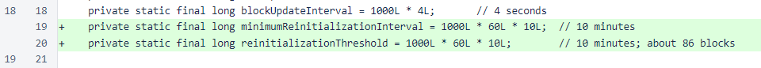In the client data manager loop, ChainInitializationManager.initializeFrozenEdge() is performed again if the age of the frozen-edge verification timestamp is greater than the threshold. To prevent frequent reinitialization and potential blacklisting if blockchain processing has stalled, a minimum interval on reinitialization is also applied.
This reinitialization process is especially important for a Micropay server. If the server in unable to track the blockchain, it will eventually be unable to produce valid Micropay transactions. Unlike the client, which is currently designed to be run interactively, the Micropay server is designed to run unattended.
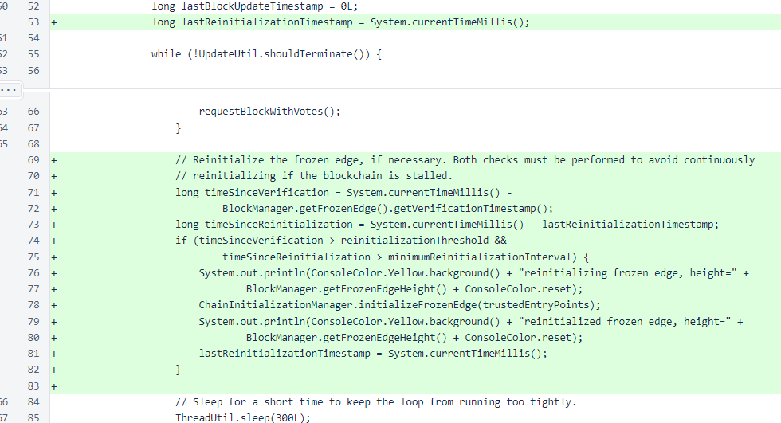A server ping page has been added. While the path is the same as the client ping page, the returned page is different.
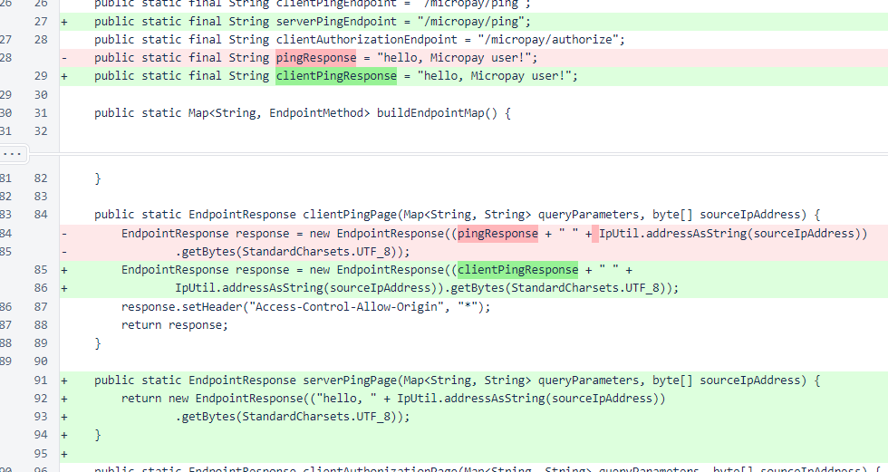Some small changes were made to HTML rendering to produce more compliant output.
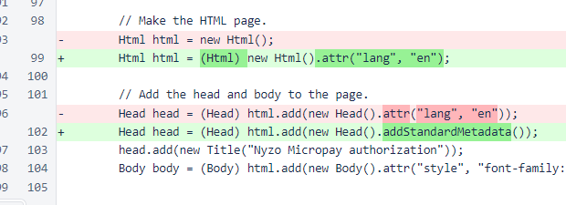The receiver ID and sender data were removed from the Micropay approval page. These were useful to demonstrate the system in the initial Micropay release, but they unnecessarily clutter the page.
While there is concern that a Micropay receiver might ask a sender to sign inappropriate sender data, allowing the user to review the metadata does not robustly address this problem. However, use of the hash of the sender data in transaction signature calculation does provide a robust and complete solution to this problem.
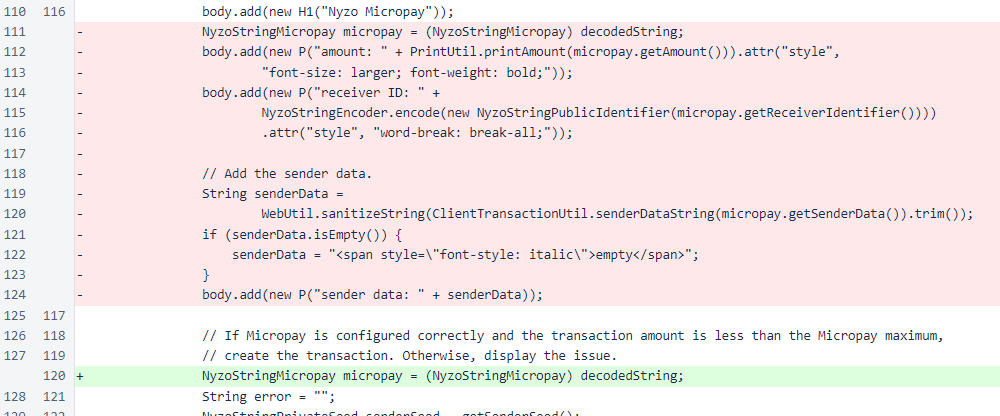The Micropay approval page now appears as follows.
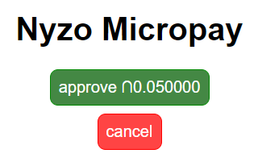A cancel query parameter with a value of y has been added for the cancellation link. This link typically returns the user to a server authorization page. To eliminate a user step from the process, the server authorization page now redirects to the client approval page by default. This parameter is used to prevent this automatic redirection when the page is reloaded due to cancellation.
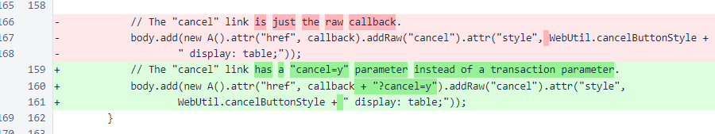The server authorization page now processes the cancel parameter.

The server authorization page has been revised to provide a simpler experience, along with some minor layout changes. Most notably, if an error or cancellation are not present, the page automatically redirects to the client authorization page.
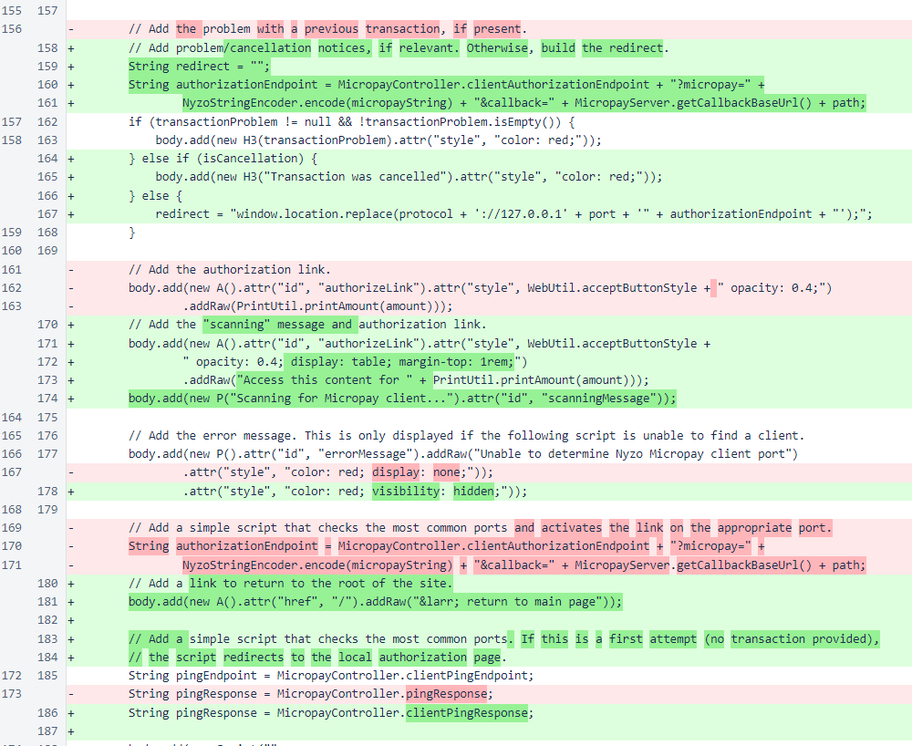This results in the following user process for typical Micropay-monetized content. This is only one additional step beyond typical non-monetized content, and it is a drastically simpler user experience than most subscription-based monetization schemes.
In WebListener, the ping page has been added to the Micropay server run mode. To allow overrides using the existing dynamic mechanism, this endpoint is added before the dynamic mappings are added. This page displays the IP the server sees, which can be helpful for a user who is trying to see why IP-based authorization is behaving oddly.
In a future version of the Micropay server, IP-based authorization will be replaced with cookie-based authorization.
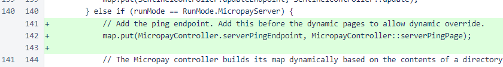In Head, the standard metadata has been structured with the Meta class. Also, the doctype tag has been updated for HTML5.
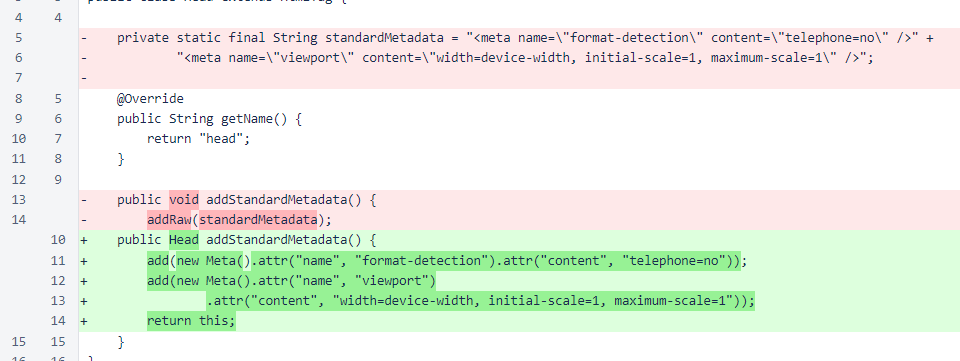In HtmlTag, the includeClosingTag option has been added to allow proper rendering of the meta tag.
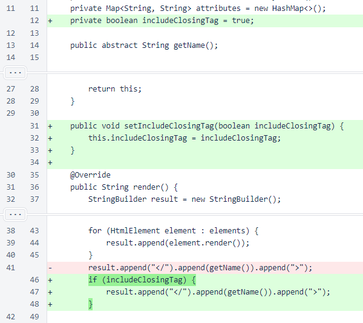The Meta class has been added to allow structuring of meta elements.
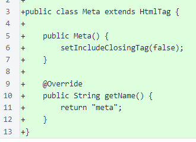